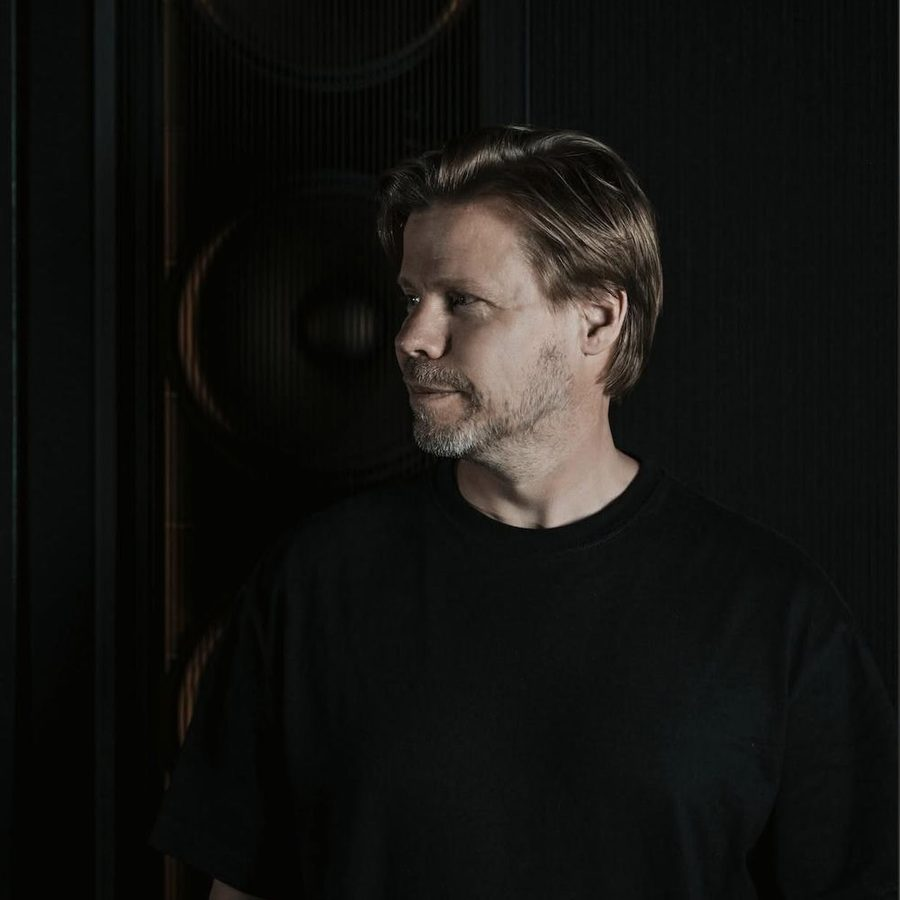

Ferry Corsten [Audio]: A blue moon experience


STREAMING AUDIO INTERVIEW
The third artist album from Dutch powerhouse Ferry Corsten reached the public in the closing months of 2008, in a year that had been one of the scene’s most vibrant and creative to date. But if there was ever any doubt Ferry could hold his own with the new generation of trance DJ/producers, it was quickly dispelled with a quick listen to Twice In A Blue Moon. It was Ferry’s most mature effort to date, his most cohesive so far and his most successful at drawing together the different musical different influences, while still being defiantly ‘trance’.
“It was a pleasant surprise,” Ferry told ITM. “A lot of people saw it as my return to trance in a way. Not that I ever left it; but I was experimenting a lot more with electro and techno. So a lot of people saw Twice In A Blue Moon as a typical trance album, and they were welcoming me with open arms in a way so it was really nice to see that.”
A year on, and it’s even more apparent how much Twice In A Blue Moon established Ferry as the scene’s most consistent producer, and Australian fans will get the chance later this month to experience it in quite a unique setting. He’ll be visiting under the mighty Cream banner and bringing the full ‘Twice In A Blue Moon: The Experience’ setup he’s been touring around the world this year.
“It’s basically a concert show around Twice in a Blue Moon where I play all the tracks off the album, and have some of the people who worked with me on the album performing live. We’ve also built the whole production show around it with pyrotechnics and visuals,” Ferry told ITM. “The album is basically all done in a visual way, so it’s a whole show built around the album, rather than just another DJ set.”
Keen for a blue moon experience? ITM’s Angus Paterson talks to Ferry Corsten as he prepares for his second Australian tour of 2009.
Catch Ferry Corsten at the following dates:
Thu Sep 10 – Brisbane, Family
Fri Sep 11 – Melbourne, Palace Metro Theatre
Sat Sep 12 – Sydney, Hordern Pavilion
Want to win twice the Cream with Ferry Corsten? You’ve got until this Friday 4th September to enter ITM’s competition, click here for more details! And check out the tour trailer for Twice In A Blue Moon: The Experience below…